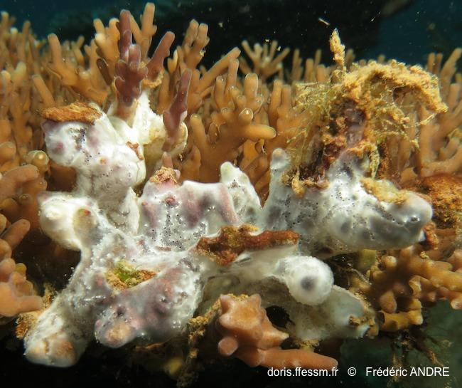

HULL BIOFOULING — What to Look For
Found Something Dodgy? STOP & REPORT
South Australia Hull Cleaning Quick Reference — Aquaculture Protection
 ⚠️ DECLARED
⚠️ DECLARED
Northern Pacific Seastar
Asterias amurensis
DECLARED - Aquaculture Threat!
- 5 arms, upturned tips
- Yellow-orange, purple marks
- Up to 50cm diameter
- Check VIC/TAS vessels!
 DECLARED
DECLARED
Carpet Sea Squirt
Didemnum vexillum
DECLARED - Sea Squirt
- Creamy/tan like old wax
- Veiny like varicose veins
- Leathery, NOT slimy
- Drips like candle wax
 DECLARED
DECLARED
Asian Green Mussel
Perna viridis
DECLARED - Mussel
- Bright green shell (young)
- Brownish-green (older)
- Big: 80-165mm
- Blue-green inside
 ESTABLISHED
ESTABLISHED
European Fan Worm
Sabella spallanzanii
ESTABLISHED - SA
- HUGE spiral fan: 45-60mm
- Stripy orange/purple/white
- Brown leathery tube
- Report new locations!
 DECLARED
DECLARED
Black-striped False Mussel
Mytilopsis sallei
DECLARED - Mussel
- Small: only 25mm
- Dark stripes on shell
- Likes brackish water
- Check sea chests!
 ESTABLISHED
ESTABLISHED
Japanese Kelp (Wakame)
Undaria pinnatifida
ESTABLISHED - Don't Spread!
- Big brown fronds
- Central spine/midrib
- Wavy ruffled edges
- Up to 3m long
 ESTABLISHED
ESTABLISHED
Asian Date Mussel
Arcuatula senhousia
ESTABLISHED - Don't Spread
- Small: up to 30mm
- Thin fragile shell
- Greenish with zigzags
- Forms dense mats
 DECLARED
DECLARED
Killer Algae
Caulerpa taxifolia
DECLARED - Algae
- Bright green - stands out
- Feather-shaped fronds
- Creeping runners
- Up to 65cm tall
 WATCH
WATCH
Stalked Sea Squirt
Styela clava
WATCH - Sea Squirt
- Brown pickle on a stalk
- Leathery & wrinkly
- 50-160mm tall
- Stands alone
 ESTABLISHED
ESTABLISHED
Pacific Oyster
Magallana gigas
ESTABLISHED - Aquaculture
- Messy irregular shell
- Sharp frilly edges!
- Up to 400mm
- Glued flat to surface
 WATCH
WATCH
NZ Green-lipped Mussel
Perna canaliculus
DECLARED - Mussel
- Green lip on edge
- Brown-green shell
- MASSIVE: up to 240mm
- Check NZ vessels
 WATCH
WATCH
Vase Tunicate
Ciona intestinalis
ESTABLISHED - Sea Squirt
- See-through yellow-green
- Tube/vase shape
- Two holes on top
- Soft & squishy
 ESTABLISHED
ESTABLISHED
European Shore Crab
Carcinus maenas
ESTABLISHED - SA
- Green shell
- 5 spines each side of eyes
- Up to 90mm across
- Hides in sea chests
 WATCH
WATCH
Asian Paddle Crab
Charybdis japonica
DECLARED - Niche Hitchhiker
- Paddle-shaped back legs
- 6 spines between eyes
- Up to 120mm across
- Olive-brown colour
 WATCH
WATCH
Pleated Sea Squirt
Styela plicata
WATCH - Sea Squirt
- Ridged like a brain
- Grey-brown colour
- Golf ball size: 70mm
- Sits alone
 NATIVE
NATIVE
Blue Mussel ✓
Mytilus galloprovincialis
Common - No Report
- Blue-black shell
- NOT green
- Pointy triangle shape
- Normal SA fouling
.jpg?width=400) NATIVE
NATIVE
Native Tube Worms ✓
Serpulidae
Common - No Report
- SMALL fan (not 45-60mm)
- White hard tubes
- NOT brown leathery tube
- Normal SA fouling

NATIVENative Sea Squirts ✓
Didemnidae
Compare Carefully!
- Thin jelly-like mat
- NOT veiny/waxy
- Slimy, not leathery
- If unsure - REPORT IT
DECLARED - Report to PIRSA
WATCH - Report 24hrs
NATIVE - Normal Fouling